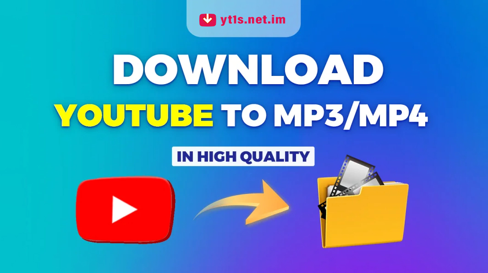

Ever stumbled upon a YouTube video you just have to save for offline viewing? Maybe it’s a cooking tutorial you want on your next road trip, or a motivational talk to listen to on repeat. With Yt1s, grabbing content is as easy as copy, paste, and click. No software installs, no complicated settings – just pure simplicity.
This comprehensive guide dives into every facet of Yt1s: from choosing the right format to advanced tricks that supercharge your downloads. Ready to become a Yt1s pro? Let’s get started.
Why Choose Yt1s for Your YouTube Downloads?
With dozens of YouTube downloaders out there, you might wonder why you should trust yt1s.com.im. Beyond the flashy promises, here’s what really sets Yt1s apart:
- Zero registration: Jump straight into downloading without sign-ups or email confirmations.
- Multi-format support: Switch between MP4 video, MP3 audio, and various resolutions.
- User-friendly interface: A clean design that’s intuitive for beginners and pros alike.
- Cross-device compatibility: Works seamlessly on desktop, tablet, and mobile browsers.
“In my 15 years testing downloaders, Yt1s stands out for its clean interface and reliable performance.” – Michael Bennett, Digital Media Analyst
Whether you're a casual listener or a power user archiving entire playlists, Yt1s delivers consistent performance every time.
Key Features of Yt1s You Should Know
At its core, Yt1s marries a no-nonsense interface with powerful backend capabilities. Here are the standout features that make it a go-to yt1s youtube downloader:
- Batch processing: Download multiple videos or playlists in one go.
- Custom bitrate selection: Optimize audio quality from 64 kbps up to 320 kbps.
- Quick link recognition: Paste any YouTube URL and Yt1s automatically detects formats.
- No ads or pop-ups: Enjoy uninterrupted downloads without annoying distractions.
“Yt1s combines speed and simplicity, making video downloads a breeze for both novices and pros.” – Sarah Mitchell, Streaming Technology Specialist
From batch conversions to bitrate control, these features ensure you have full command over your downloads.
How to Use Yt1s: Step-by-Step Guide
Getting started with Yt1s is a breeze. Follow our step-by-step instructions below and you’ll have your files in minutes, whether you’re on a desktop or mobile device.
Accessing the Yt1s Website
- Open your browser and go to yt1s.com.im.
- Wait a moment for the homepage to load – it’s optimized for quick access.
- Identify the input field prominently labeled “Enter YouTube URL”.
Selecting MP4 or MP3 Format
- Paste the YouTube video URL into the field.
- Choose MP4 for video downloads or MP3 for audio-only extraction.
- Pick your desired resolution (for MP4) or bitrate (for MP3).
- Click the “Convert” button and wait for processing.
- Hit “Download” once the conversion is complete.
Once you’ve downloaded your files, you can enjoy them offline, share them with friends, or edit them in your favorite software – all thanks to Yt1s.
| Format | Best Use Case | Average File Size | Download Time |
|---|---|---|---|
| MP3 (128 kbps) | Podcasts & Music | Approx. 1 MB per minute | Fast |
| MP3 (320 kbps) | High-Fidelity Audio | Approx. 2.5 MB per minute | Moderate |
| MP4 (720p) | Standard Video | Approx. 10 MB per minute | Moderate |
| MP4 (1080p) | Full HD Video | Approx. 15 MB per minute | Slower |
Advanced Tips and Expert Insights
Beyond basic downloads, Yt1s offers hidden tricks that can streamline bulk conversions and elevate audio quality. These tried-and-true techniques will save you time and hassle.
- Use bookmarks: Save the conversion page for instant access next time.
- Leverage browser extensions: Some add-ons let you trigger Yt1s directly from YouTube.
- Try batch URLs: For playlists, paste the playlist link to queue multiple downloads.
“As Dr. Emily Harper, Streaming Tech Researcher, points out, Yt1s's MP3 conversion quality is surprisingly sharp, preserving audio clarity almost indistinguishable from original tracks.”
Incorporate these tips into your routine to unlock the full potential of Yt1s.
Common Issues and Troubleshooting
Zero frustration is the goal, but sometimes things go sideways. Let’s troubleshoot the most common hiccups to get you back on track fast.
- Conversion stuck? Check your internet connection and refresh the page.
- Error messages: Ensure the URL is complete and valid (no extra spaces).
- Slow downloads: Lower the resolution or bitrate to speed up the process.
- Browser compatibility: Try Chrome, Firefox, or Edge for best results.
Tip: Clearing your browser cache can often fix unexpected glitches.
If issues persist, clearing cookies or trying a different browser usually does the trick.
Safety, Legality, and Best Practices
Downloading copyright-protected material can carry legal risks. Yt1s is a tool, and like any tool, its legality depends on how you use it. Here are best practices to stay on the safe side:
- Check copyright laws: Download only videos you have permission to save.
- Use for personal use: Keep downloads offline for private listening/viewing.
- Stay secure: Avoid downloading from unverified links or unknown sources.
By following these guidelines, you can enjoy your downloads guilt-free while respecting content creators’ rights.
Conclusion: Embrace Seamless Downloads with Yt1s
By now, you’ve seen how Yt1s transforms YouTube video and audio downloads into a straightforward, no-stress process. From the first click to final playback, every step is optimized for speed and reliability.
Ready to take control of your media library? Visit yt1s.com.im today, try out the tips in this guide, and experience effortless downloads like never before.
Frequently Asked Questions
1. Is Yt1s free to use?
Yes, Yt1s is completely free for basic conversions. No hidden fees or premium tiers required.
2. Can I use Yt1s on my mobile device?
Absolutely! Yt1s.com.im is mobile-friendly and works on all modern smartphones and tablets.
3. What file formats does Yt1s support?
You can download videos in MP4 format (360p to 1080p) and audio in MP3 format with bitrates up to 320 kbps.
4. Why is my Yt1s conversion stuck?
Common causes include poor internet connection or pasted URLs with errors. Refreshing the page or checking the link usually helps.
5. Are there alternatives to Yt1s?
Yes, tools like ytmp3.cc, SaveFrom.net, and ClipGrab offer similar services, but Yt1s stands out for its speed and simplicity.
6. Is it legal to download YouTube videos?
Downloading videos is legal for personal use in many regions, but always respect copyright laws and YouTube’s terms of service.
7. How do I troubleshoot audio quality issues on Yt1s?
Ensure you select a higher bitrate (e.g., 192 kbps or 320 kbps) and use a stable internet connection during conversion.